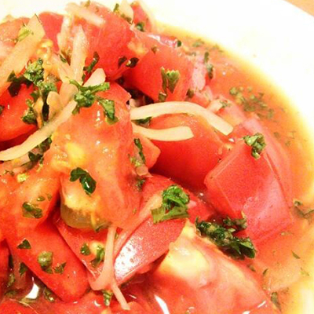
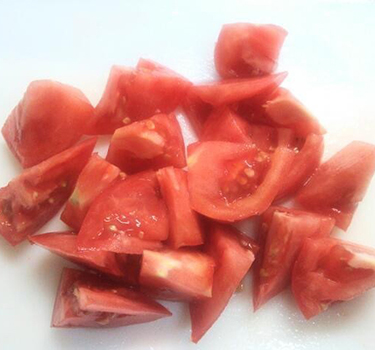
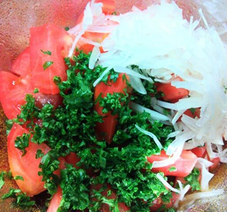
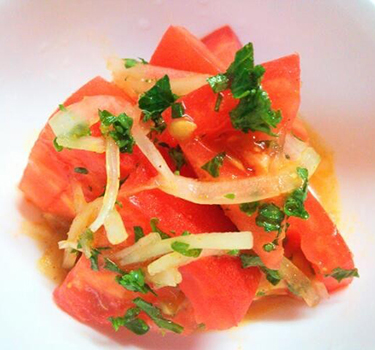

材料
- トマト -２個
- たまねぎ -４／１個
- パセリ
-みじん切り（１本分） - 酢 -大さじ１
- 砂糖 -小さじ２
- 塩 -小さじ２／１
- 胡椒 -少々
- オリーブオイル
-小さじ２
玉ねぎ1/4は横半分にし端からスライス、水にさらしておきます。
トマトは大き目にざく切りします。
トマトは大き目にざく切りします。

ボウルに調味料を合わせます。オイルはオリーブでもサラダ油でもお好みのもので！
切った野菜を加えてざっくりと混ぜます。
切った野菜を加えてざっくりと混ぜます。

食べる直前まで冷蔵庫で冷やして！ 砂糖や酢はお好みで調整してください。
